ENMeval 2.0.5 Vignette
Jamie M. Kass, Robert Muscarella, Gonzalo E. Pinilla-Buitrago, and Peter J. Galante
2025-06-23
ENMeval-2.0-vignette.Rmd- Introduction
- Data Acquisition & Pre-processing
- Partitioning Occurrences for Evaluation
- Running ENMeval
- Model Selection
- Plotting results
- Null Models
- Metadata
- References and Resources
Introduction
- To align with the new
ENMeval2.0.5, this version updates the vignette by replacingrasterfunctions with those fromterra, anddismofunctions with those frompredicts. These updates were made by G. E. Pinilla-Buitrago.
ENMeval
is an R package that performs automated tuning and evaluations of
ecological niche models (ENMs, a.k.a. species distribution models or
SDMs), which can estimate species’ ranges and niche characteristics
using data on species occurrences and environmental variables (Franklin
2010, Peterson et al. 2011, Guisan et al. 2017).
Some of the most frequently used ENMs are machine learning algorithms with settings that can be “tuned” to determine optimal levels of model complexity (Hastie et al. 2009, Radosavljevic & Anderson 2014, Hallgren et al. 2019). In implementation, this means building models of varying settings, then evaluating them and comparing their performance to select the optimal settings. Such tuning exercises can result in models that balance goodness-of-fit (i.e., avoiding overfitting) and predictive ability. Model evaluation is often done with cross-validation, which consists of partitioning the data into groups, building a model with all the groups but one, evaluating this model on the left-out group, then repeating the process until all groups have been left out once (Hastie et al. 2009, Roberts et al. 2017).
ENMeval has one primary function,
ENMevaluate, which runs the tuning analysis and
evaluations, returning an ENMevaluation object that
contains the results. These results include a table of evaluation
statistics, fitted model objects, and prediction rasters for each
combination of model settings. The older versions of
ENMeval (0.3.0 and earlier; Muscarella et al. 2014)
implemented only the ENM presence-background algorithm Maxent through
the Java software maxent.jar
and the R package maxnet,
but ENMeval 2.0.x offers functionality for adding and
customizing the implementations of ENM algorithms and their evaluations.
This new version also features automatic generation of metadata, a null
model for calculating effect size and significance of performance
metrics, various plotting tools, options for parallel computing, and
more.
In this updated vignette, we detail a full ENM analysis: acquisition and
processing of input data, sampling background data, deciding on
partitioning methods, tuning models, examining results and selecting
optimal model settings, building null models to test for significance of
performance metrics, and more using ENMeval 2.0.x and other
relevant R packages. In addition to this vignette, there are other
excellent tutorials on ENMs, some of which can be found in the References and Resources section.
Data Acquisition & Pre-processing
We’ll start by downloading an occurrence dataset for Bradypus
variegatus, the brown-throated sloth. Along the way, if you
notice you cannot load a particular package, simply install it with
install.packages, then try library again.
# Load packages -- the order here is important because some pkg functions overwrite others.
library(ENMeval)
library(geodata)
library(usdm)
library(blockCV)
library(sf)
library(tibble)
library(ggplot2)
library(knitr)
library(terra)
library(dplyr)
# Set a random seed in order to be able to reproduce this analysis.
set.seed(48)
# You can search online databases like GBIF using the spocc package (commented below),
# but here we will load in some pre-downloaded data.
# bv <- spocc::occ('Bradypus variegatus', 'gbif', limit=300, has_coords = TRUE)
# occs <- as.data.frame(bv$gbif$data$Bradypus_variegatus[,2:3])
occs <- readRDS("bvariegatus.rds")
# Removing occurrences that have the same coordinates is good practice to
# avoid pseudoreplication.
occs <- occs[!duplicated(occs),]We are going to model the climatic niche suitability for our focal
species using long-term summarized climate data from WorldClim 2.1. WorldClim has a
range of variables available at various resolutions; for simplicity,
here we’ll use the 19 bioclimatic variables at 5 arcmin resolution
(about 10 km across at the equator) downloadable using the
geodata package. Many of these variables are often highly
correlated, and modeling with correlated variables can lead to
inaccurate results (even with machine-learning methods that are robust
to collinearity), so we will remove those with the highest variance
inflation factor (VIF), a measure of variable correlation.
# Download global raster data for bioclimatic variables from WorldClim 2.1, then
# simplify their names and crop them to our extent of interest.
# Find the descriptions of the bioclimatic variables here:
# https://www.worldclim.org/data/bioclim.html
envs <- geodata::worldclim_global(var = "bio", res = 5, path = ".")
names(envs) <- paste("bio", 1:19, sep = "")
extent <- ext(-125, -32, -56, 40)
envs <- crop(envs, extent)
# Now we will remove those variables from consideration that have a high VIF.
envs.vif <- usdm::vifstep(envs)
envs.rem <- envs.vif@excluded
envs <- envs[[!(names(envs) %in% envs.rem)]]
# Let's now remove occurrences that are cell duplicates -- these are
# occurrences that share a grid cell in the predictor variable rasters.
# Although Maxent does this by default, keep in mind that for other algorithms you may
# or may not want to do this based on the aims of your study.
# Another way to space occurrence records a defined distance from each other to avoid
# spatial autocorrelation is with spatial thinning (Aiello-Lammens et al. 2015).
occs.cells <- terra::extract(envs[[1]], occs, cellnumbers = TRUE, ID = FALSE)
occs.cellDups <- duplicated(occs.cells[,1])
occs <- occs[!occs.cellDups,]
# Plot first raster in the stack, the mean annual temperature.
plot(envs[[1]], main="Mean annual temperature")
# Add points for all the occurrence points onto the raster.
points(occs)
# There are some points east of the Amazon River.
# Suppose we know this is a population that we don't want to include in the model.
# We can remove these points from the analysis by subsetting the occurrences by
# latitude and longitude.
occs <- filter(occs, latitude > -20, longitude < -45)
# Plot the subsetted occurrences to make sure we filtered correctly.
points(occs)Now let’s take a look at which areas of this extent are climatically different with respect to the areas associated with the occurrence points. To do this, we’ll use the Multivariate Environmental Similarity surface, or MESS (Elith et al. 2010). Higher positive values indicate increasing similarity, while higher negative values indicate dissimilarity. Other methods besides MESS have also been proposed and warrant exploration (e.g., Owens et al. 2013, Mesgaran et al. 2014). This is important to investigate when considering model transfer to other times or places, as environments that are extremely dissimilar to those used to train the model in the present can result in projections with high uncertainty (Wenger & Olden 2012, Wright et al. 2015, Soley-Guardia 2019).
# First we extract the climatic variable values at the occurrence points --
# these values are our "reference". Let's first remove the occurrences with
# NA values for our environmental variable rasters.
occs.z <- terra::extract(envs, occs, ID = FALSE)
occs.na <- which(rowSums(is.na(occs.z)) > 0)
occs <- occs[-occs.na,]
occs.z <- na.omit(occs.z)
# Now we use the mess() function from the predicts pkg to calculate
# environmental similarity metrics of our predictor variable extent compared to
# the reference points.
occs.mess <- predicts::mess(envs, occs.z)
# This is the MESS plot -- increasingly negative values represent increasingly different
# climatic conditions from the reference (our occurrences), while increasingly positive
# values are more similar.
plot(occs.mess, main = "Environmental similarity")
points(occs)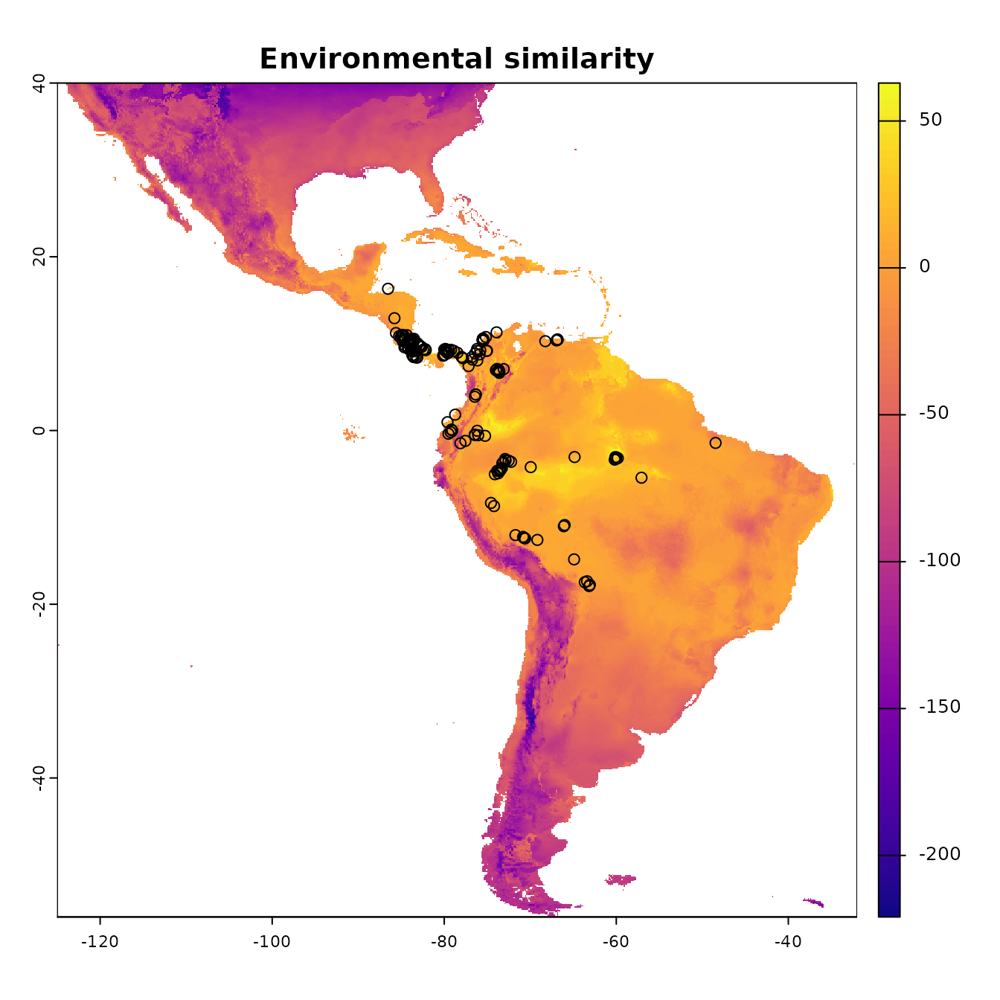
Since our models will compare the environment at occurrence localities to the environment at background localities, we need to sample random points from a background extent. Now we will specify the study extent that defines where we sample background data by cropping our global predictor variable rasters to a smaller region. To help ensure we do not include areas that are suitable for our species but are unoccupied due to limitations like dispersal constraints, we will conservatively define the background extent as an area surrounding our occurrence localities (VanDerWal et al. 2009, Merow et al. 2013). We will do this by buffering a bounding box that includes all occurrence localities. Some other methods of background extent delineation (e.g., minimum convex hulls) are more conservative because they better characterize the geographic space holding the points. In any case, this is one of the many things that you will need to carefully consider for your own study.
# We'll now experiment with a different spatial R package called sf (simple features).
# Let's make our occs into a sf object -- as the coordinate reference system (crs) for these
# points is WGS84, a geographic crs (lat/lon) and the same as our envs rasters, we specify it
# as the SpatRaster's crs.
occs.sf <- sf::st_as_sf(occs, coords = c("longitude","latitude"), crs = terra::crs(envs))
# Now, we project our point data to an equal-area projection, which converts our
# degrees to meters, which is ideal for buffering (the next step).
# We use the typical Eckert IV projection.
eckertIV <- "+proj=eck4 +lon_0=0 +x_0=0 +y_0=0 +datum=WGS84 +units=m +no_defs"
occs.sf <- sf::st_transform(occs.sf, crs = eckertIV)
# Buffer all occurrences by 500 km, union the polygons together
# (for visualization), and convert back to a form that the terra package
# can use. Finally, we reproject the buffers back to WGS84 (lat/lon).
# We choose 500 km here to avoid sampling the Caribbean islands.
occs.buf <- sf::st_buffer(occs.sf, dist = 500000) |>
sf::st_union() |>
sf::st_sf() |>
sf::st_transform(crs = terra::crs(envs))
plot(envs[[1]], main = names(envs)[1])
points(occs)
# To add sf objects to a plot, use add = TRUE
plot(occs.buf, border = "blue", lwd = 3, add = TRUE)
# Crop environmental rasters to match the study extent
envs.bg <- terra::crop(envs, occs.buf)
# Next, mask the rasters to the shape of the buffers
envs.bg <- terra::mask(envs.bg, occs.buf)
plot(envs.bg[[1]], main = names(envs)[1])
points(occs)
plot(occs.buf, border = "blue", lwd = 3, add = TRUE)In the next step, we’ll sample 10,000 random points from the background (note that the number of background points is also a consideration you should make with respect to your own study).
# Randomly sample 10,000 background points from one background extent raster
# (only one per cell without replacement).
bg <- terra::spatSample(envs.bg, size = 10000, na.rm = TRUE,
values = FALSE, xy = TRUE) |> as.data.frame()
colnames(bg) <- colnames(occs)
# Notice how we have pretty good coverage (every cell).
plot(envs.bg[[1]])
points(bg, pch = 20, cex = 0.2)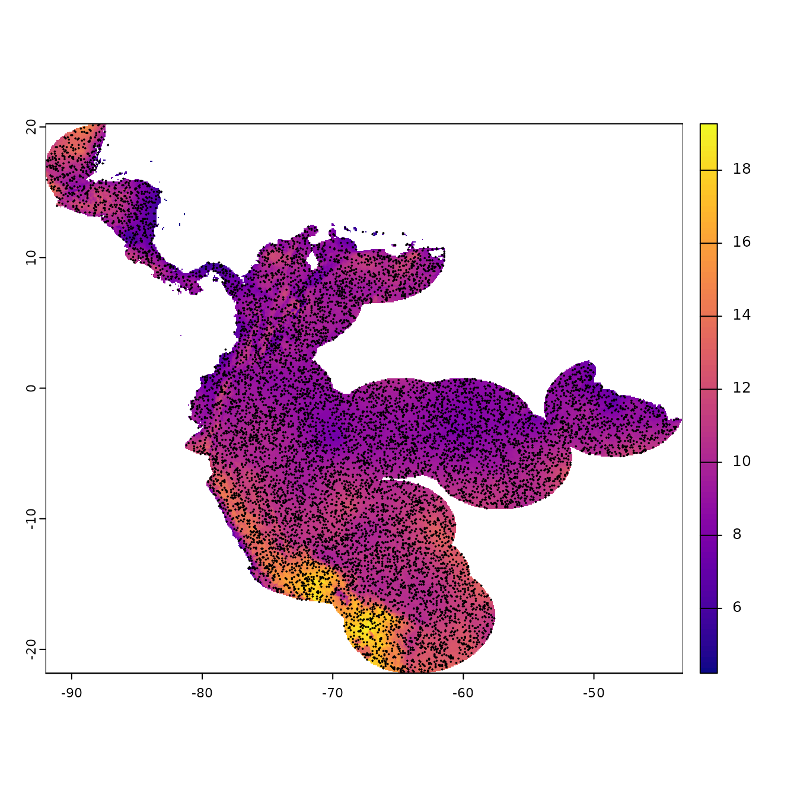
Partitioning Occurrences for Evaluation
A run of ENMevaluate begins by using one of seven
methods to partition occurrence localities into validation and training
bins (folds) for k-fold cross-validation (Fielding & Bell
1997, Hastie et al. 2009, Peterson et al. 2011). Data partitioning is
done internally by ENMevaluate based on what the user
inputs for the partitions argument, but this can also be
done externally using the partitioning functions. In this section, we
explain and illustrate these different functions. We also demonstrate
how to make informative plots of partitions and the environmental
similarity of partitions to the background or study extent.
- Spatial Block
- Spatial Checkerboard
- Spatial Hierarchical Checkerboard
- Jackknife (leave-one-out)
- Random k-fold
- Fully Withheld Testing Data
- User
The first three partitioning methods are variations of what
Radosavljevic and Anderson (2014) referred to as ‘masked geographically
structured’ data partitioning. Basically, these methods partition both
occurrence and background records into evaluation bins based on spatial
rules. The intention is to reduce spatial-autocorrelation between points
that are included in the validation and training bins, which can
overinflate model performance, at least for data sets that result from
biased sampling (Veloz 2009, Wenger & Olden 2012, Roberts et
al. 2017). Other spatial partitioning methods for ENMs can be found in
the R package blockCV (Valavi et al. 2019), which we
demonstrate below for use with ENMeval.
1. Block
First, the ‘block’ method partitions data according to the latitude
and longitude lines that divide the occurrence localities into four
spatial groups of equal numbers (or as close as possible). Both
occurrence and background localities are assigned to each of the four
bins based on their position with respect to these lines – the first
direction bisects the points into two groups, and the second direction
bisects each of these further into two groups each, resulting in four
groups. The resulting object is a list of two vectors that supply the
bin designation for each occurrence and background point. In
ENMeval 2.0.x, users can additionally specify different
orientations for the blocking with the orientation
argument.
block <- get.block(occs, bg, orientation = "lat_lon")
# Let's make sure that we have an even number of occurrences in each partition.
table(block$occs.grp)
#>
#> 1 2 3 4
#> 45 44 45 44
# We can plot our partitions on one of our predictor variable rasters to visualize
# where they fall in space.
# The ENMeval 2.0.x plotting functions use ggplot2 (Wickham 2016), a popular plotting
# package for R with many online resources.
# We can add to the ggplots with other ggplot functions in an additive way, making
# these plots easily customizable.
evalplot.grps(pts = occs, pts.grp = block$occs.grp, envs = envs.bg) +
ggplot2::ggtitle("Spatial block partitions: occurrences")
# PLotting the background shows that the background extent is partitioned in a way
# that maximizes evenness of points across the four bins, not to maximize evenness of area.
evalplot.grps(pts = bg, pts.grp = block$bg.grp, envs = envs.bg) +
ggplot2::ggtitle("Spatial block partitions: background")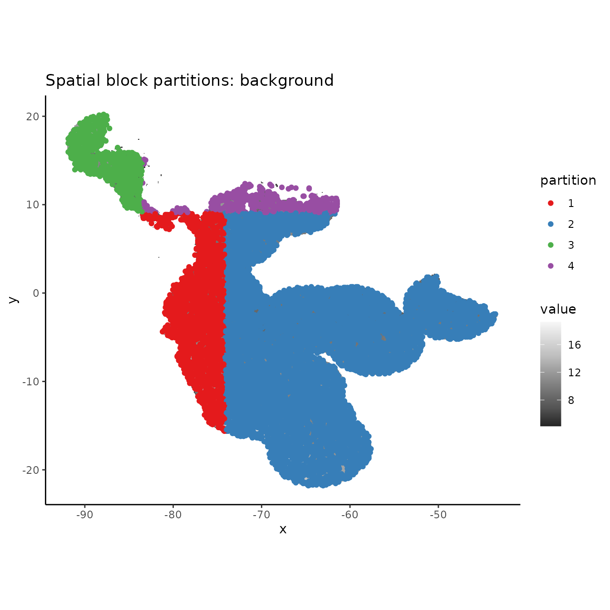
# If we are curious how different the environment associated with each partition is from
# that of all the others, we can use this function to plot histograms or rasters of MESS
# predictions with each partition as the reference.
# First we need to extract the predictor variable values at our occurrence and
# background localities.
occs.z <- cbind(occs, terra::extract(envs, occs, ID = FALSE))
bg.z <- cbind(bg, terra::extract(envs, bg, ID = FALSE))
evalplot.envSim.hist(occs.z = occs.z, bg.z = bg.z, occs.grp = block$occs.grp,
bg.grp = block$bg.grp, ref.data = "occs")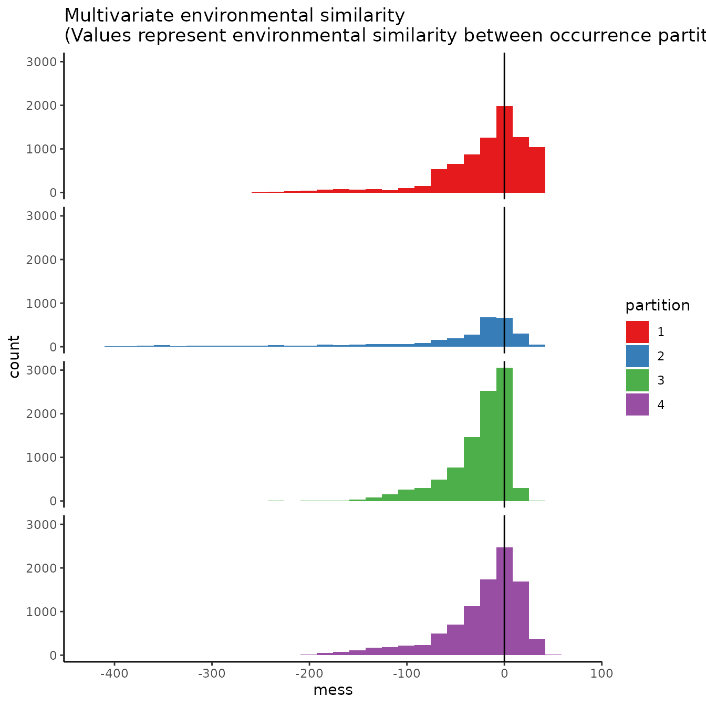
# Here we plot environmental similarity values for the entire extent with respect
# to each validation group.
# We use the bb.buf (bounding box buffer) argument to zoom in to our study extent.
evalplot.envSim.map(envs = envs, occs.z = occs.z, bg.z = bg.z,
occs.grp = block$occs.grp, bg.grp = block$bg.grp,
ref.data = "occs", bb.buf = 7)2. Basic checkerboard
The next two partitioning methods are variants of a checkerboard approach to partition occurrence localities (Radosavljevic & Anderson 2014). These generate checkerboard grids across the study extent and partition the localities into groups based on where they fall on the checkerboard. In contrast to the block method, both checkerboard methods subdivide geographic space equally but do not ensure a balanced number of occurrence localities in each bin. For these methods, the user needs to provide a raster layer on which to base the underlying checkerboard pattern. Here we simply use the predictor variable SpatRaster. Additionally, the user needs to define an aggregation.factor. This value specifies the number of grids cells to aggregate when making the underlying checkerboard pattern.
The basic checkerboard method partitions the points into k = 2 spatial groups using a simple checkerboard pattern.
cb1 <- get.checkerboard(occs, envs.bg, bg, aggregation.factor = 25)
evalplot.grps(pts = occs, pts.grp = cb1$occs.grp, envs = envs.bg)
# Plotting the background points shows the checkerboard pattern clearly.
evalplot.grps(pts = bg, pts.grp = cb1$bg.grp, envs = envs.bg)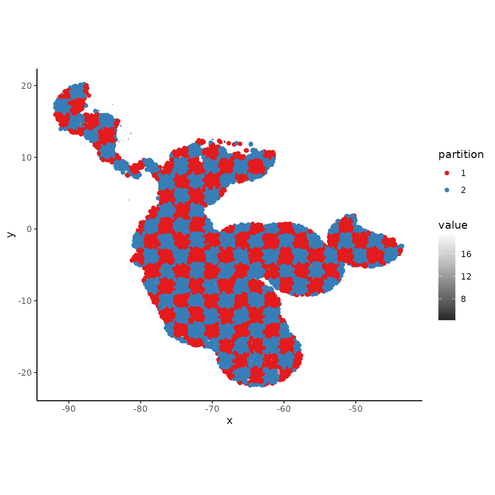
# We can see from the MESS maps that this method results in similar environmental
# representation between the partitions.
evalplot.envSim.hist(occs.z = occs.z, bg.z = bg.z, occs.grp = cb1$occs.grp,
bg.grp = cb1$bg.grp, ref.data = "occs")
evalplot.envSim.map(envs = envs, occs.z = occs.z, bg.z = bg.z,
occs.grp = cb1$occs.grp, bg.grp = cb1$bg.grp,
ref.data = "occs", bb.buf = 7)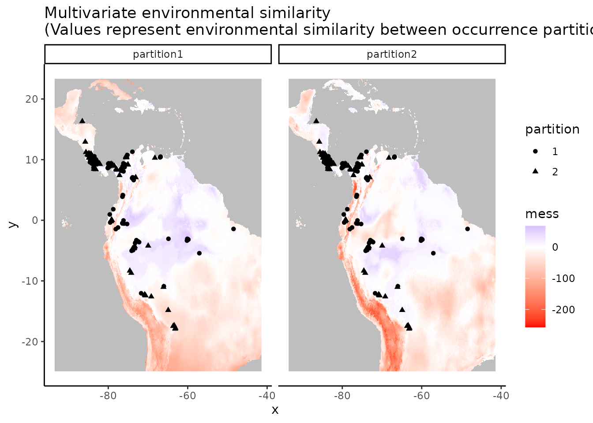
# We can increase the aggregation factor to give the groups bigger boxes.
# This can result in groups that are more environmentally different from each other.
cb1.large <- get.checkerboard(occs, envs.bg, bg, aggregation.factor = 100)
evalplot.grps(pts = occs, pts.grp = cb1.large$occs.grp, envs = envs.bg)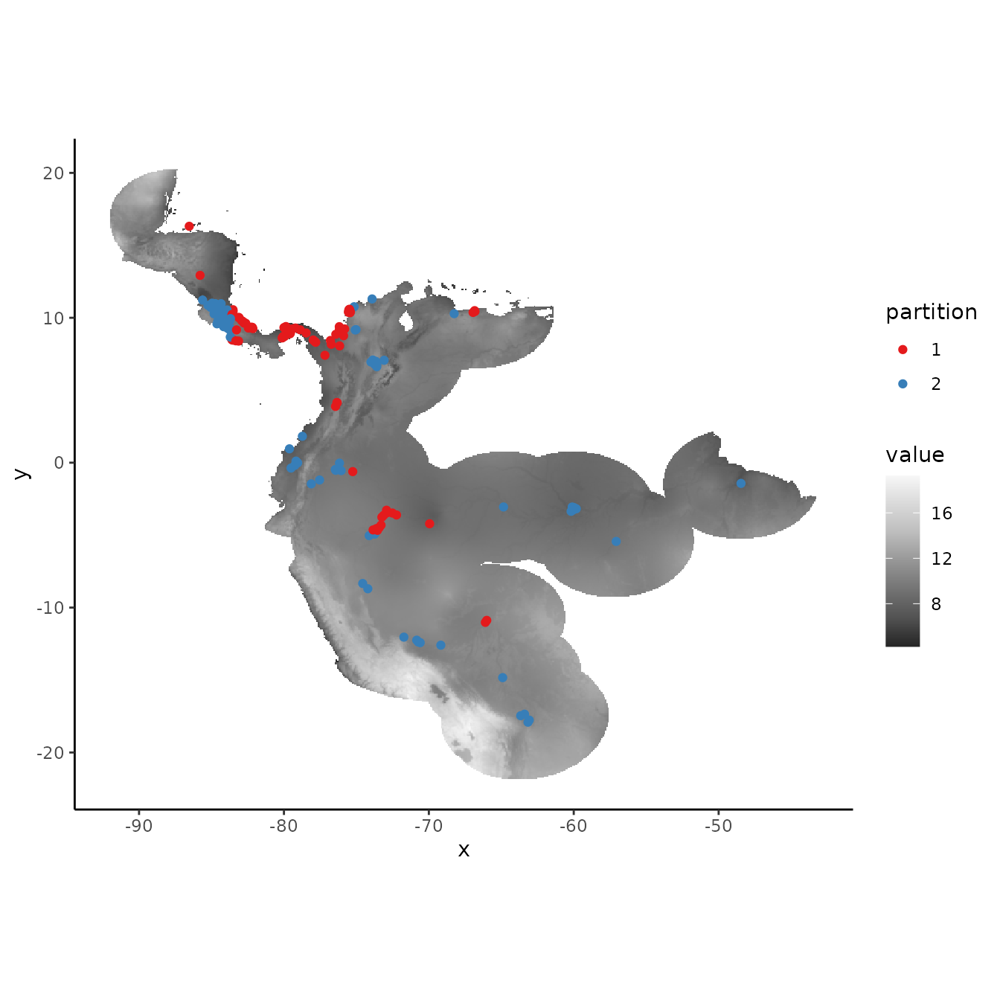
evalplot.grps(pts = bg, pts.grp = cb1.large$bg.grp, envs = envs.bg)
evalplot.envSim.hist(occs.z = occs.z, bg.z = bg.z,
occs.grp = cb1.large$occs.grp, bg.grp = cb1$bg.grp,
ref.data = "occs")
evalplot.envSim.map(envs = envs, occs.z = occs.z, bg.z = bg.z,
occs.grp = cb1.large$occs.grp, bg.grp = cb1$bg.grp,
ref.data = "occs", bb.buf = 7)3. Hierarchical checkerboard
The hierarchical checkerboard method partitions the data into k = 4 spatial groups. This is done by inputting two aggregation factors to hierarchically aggregate the input raster at two scales. Presence and background groups are assigned based on which box they fall into on the hierarchical checkerboard.
cb2 <- get.checkerboard(occs, envs.bg, bg, aggregation.factor = c(10,10))
evalplot.grps(pts = occs, pts.grp = cb2$occs.grp, envs = envs.bg)
# Plotting the background points shows the checkerboard pattern very clearly.
evalplot.grps(pts = bg, pts.grp = cb2$bg.grp, envs = envs.bg)
# Different from basic checkerboard, some partitions here do show some difference
# in environmental representation, but not as consistently different as with block.
evalplot.envSim.hist(occs.z = occs.z, bg.z = bg.z, occs.grp = cb2$occs.grp,
bg.grp = cb2$bg.grp, ref.data = "occs")
evalplot.envSim.map(envs = envs, occs.z = occs.z, bg.z = bg.z,
occs.grp = cb2$occs.grp, bg.grp = cb2$bg.grp,
ref.data = "occs", bb.buf = 7)4. Jackknife (leave-one-out)
The next two methods differ from the first three in that (a) they do not partition the background points into different groups (meaning that the full background is used to evaluate each partition), and (b) they do not account for spatial autocorrelation between validation and training localities. Primarily when working with relatively small data sets (e.g. < ca. 25 presence localities), users may choose a special case of k-fold cross-validation where the number of bins (k) is equal to the number of occurrence localities (n) in the data set (Pearson et al. 2007; Shcheglovitova & Anderson 2013). This is referred to as jackknife, or leave-one-out, partitioning (Hastie et al. 2009). As n models are processed with this partitioning method, the computation time could be long for large occurrence datasets.
jack <- get.jackknife(occs, bg)
# If the number of input points is larger than 10, the legend for the groups
# is suppressed.
evalplot.grps(pts = occs, pts.grp = jack$occs.grp, envs = envs.bg)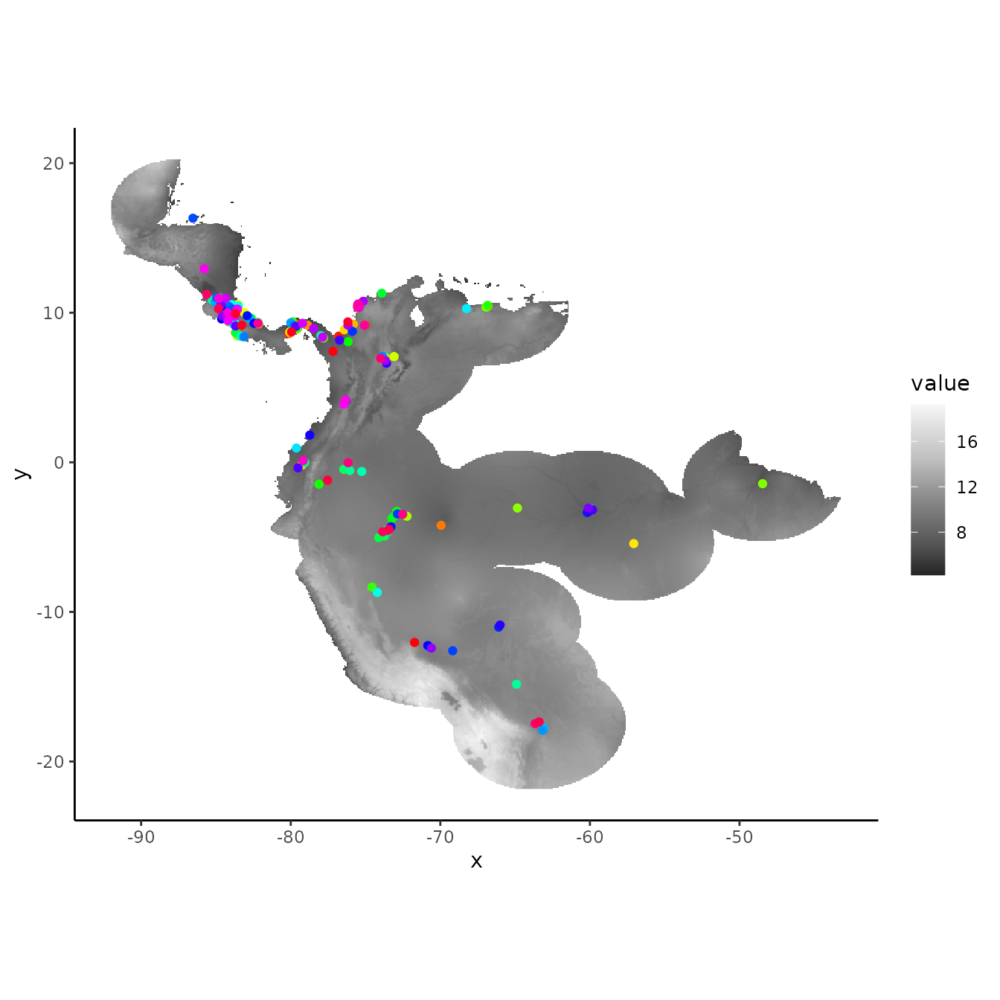
5. Random k-fold
The ‘random k-fold’ method partitions occurrence localities randomly into a user-specified number of (k) bins (Hastie et al. 2009). This method is equivalent to the ‘cross-validate’ partitioning scheme available in the current version of the Maxent software GUI. Especially with larger occurrence datasets, this partitioning method could randomly result in some spatial clustering of groups, which is why spatial partitioning methods are preferable for addressing spatial autocorrelation (Roberts et al. 2017). Below, we partition the data into five random groups.
rand <- get.randomkfold(occs, bg, k = 5)
evalplot.grps(pts = occs, pts.grp = rand$occs.grp, envs = envs.bg)
# As the partitions are random, there is no large environmental difference between them.
evalplot.envSim.hist(occs.z = occs.z, bg.z = bg.z, occs.grp = rand$occs.grp,
bg.grp = rand$bg.grp, ref.data = "occs")
evalplot.envSim.map(envs = envs, occs.z = occs.z, bg.z = bg.z,
occs.grp = rand$occs.grp, bg.grp = rand$bg.grp,
ref.data = "occs", bb.buf = 7)6. Fully Withheld Testing Data
The ‘testing’ method evaluates the model on a fully withheld testing dataset that is not used to create the full model (i.e., not included in the training data), meaning that cross validation statistics are not calculated. Evaluations with fully withheld testing data have been shown to result in models with better transferability (Soley-Guardia et al. 2019).
To illustrate this, we will make a table containing occurrences representing both training data and fully withheld testing data (which we simulate) and plot the partitions in the same way as above. However, the testing data (group 2) will not become training data for a new model. Instead, the training data (group 1) is used to make the model, and the testing data (group 2) are used only to evaluate it. Thus, the background extent does not include the testing data (a few points fall inside this extent because of the buffer we applied, but they are not used as training data).
# First, let's specify a fake testing occurrence dataset and plot the testing points with
# the rest of our data
occs.testing <- data.frame(longitude = -runif(10, 55, 65), latitude = runif(10, -10, 0))
evalplot.grps(pts = rbind(occs, occs.testing),
pts.grp = c(rep(1, nrow(occs)), rep(2, nrow(occs.testing))), envs = envs.bg)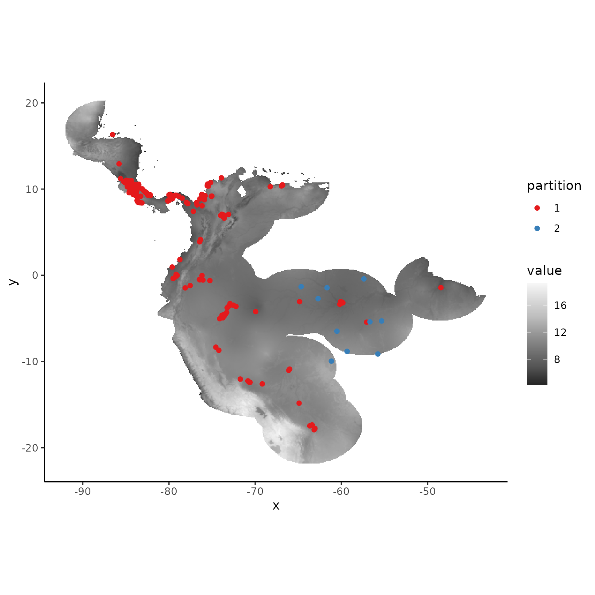
# Next, let's extract the predictor variable values for our testing points.
occs.testing.z <- cbind(occs.testing, terra::extract(envs, occs.testing, ID = FALSE))
# We use the same background groups as random partitions here because the background used
# for testing data is also from the full study extent. We use here the occs.testing.z
# parameter to add information for our testing localities, and we set the partitions
# for occurrences all to zero (as no partitioning is done).
evalplot.envSim.hist(occs.z = occs.z, bg.z = bg.z,
occs.grp = rep(0, nrow(occs)), bg.grp = rand$bg.grp,
ref.data = "occs", occs.testing.z = occs.testing.z)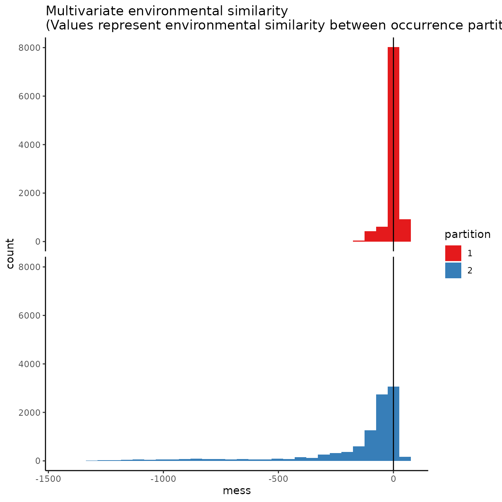
evalplot.envSim.map(envs = envs, occs.z = occs.z,
bg.z = bg.z, occs.grp = rep(0, nrow(occs)),
bg.grp = rand$bg.grp, bb.buf = 7,
ref.data = "occs", occs.testing.z = occs.testing.z)
# We can see what is to be expected -- the testing dataset is much more restricted
# environmentally than the training data, and thus is much more difference with the
# study extent.7. User-defined
For maximum flexibility, the last partitioning method is designed so that users can define a priori partitions. This provides a flexible way to conduct spatially-independent cross-validation with background masking. For example, we demonstrate partitioning the occurrence data based on k-means groups. The user-defined partition option can also be used to input partition groups derived from other sources.
# Here we run a k-means clustering algorithm to group our occurrences into discrete spatial
# groups based on their coordinates.
grp.n <- 6
kmeans <- kmeans(occs, grp.n)
occs.grp <- kmeans$cluster
evalplot.grps(pts = occs, pts.grp = occs.grp, envs = envs.bg)When using the user-defined partitioning method, we need to supply
ENMevaluate with group identifiers for both occurrence AND
background records If we want to use all background records for each
group, we can set the background to zero.
# Assign all background records
bg.grp <- rep(0, nrow(bg))
evalplot.grps(pts = bg, pts.grp = bg.grp, envs = envs.bg)Alternatively, we may think of various ways to partition background data. This depends on the goals of the study but we might, for example, find it reasonable to partition background records by assigning groups based on distance to the centroids of the occurrence clusters.
# Here we find the centers of the occurrence k-means clusters and calculate the spatial
# distance of each background point to them. We then find which center had the minimum
# distance for each record and assign that record to this centroid group.
centers <- kmeans$center
d <- terra::distance(as.matrix(bg), centers, lonlat = TRUE)
bg.grp <- apply(d, 1, function(x) which(x == min(x)))
evalplot.grps(pts = bg, pts.grp = bg.grp, envs = envs.bg)We can also use other packages to partition our data. As an example,
we next show how to use the R package blockCV
(Valavi et al. 2019) to generate spatial partitions to input into
ENMevaluate. We use the spatialBlock function
to generate blocks similar to the checkerboard partition in
ENMeval, except that we choose here to select partitions
randomly over these blocks. This package offers other kinds of block
partitioning methods as well. Using other packages in this way expands
the variety of partitions you can use to evaluate models in
ENMeval, and we highly encourage experimenting with a
plurality of tools.
# First, we convert our occurrence and background records to spatial point data with the
# package sf and assign the correct coordinate reference system.
occsBg.sf <- sf::st_as_sf(rbind(occs, bg), coords = c("longitude","latitude"),
crs = "+proj=longlat +ellps=WGS84 +datum=WGS84 +no_defs")
terra::crs(envs.bg) <- terra::crs(occsBg.sf)
# Here, we implement the spatialBlock function from the blockCV package.
# The required inputs are similar to ENMeval partitioning functions, but here you assign
# the size of blocks in meters with the argument theRange (here set at 1000 km), and the
# partition selection method can be assigned as either "checkerboard" or "random"
# In addition, the spatialBlock function returns a map showing the different
# spatial partitions.
sb <- blockCV::cv_spatial(x = occsBg.sf, r = envs.bg, k = 5,
size = 1000000, selection = "random")
#> | | | 0% | |= | 1% | |= | 2% | |== | 3% | |=== | 4% | |==== | 5% | |==== | 6% | |===== | 7% | |====== | 8% | |====== | 9% | |======= | 10% | |======== | 11% | |======== | 12% | |========= | 13% | |========== | 14% | |========== | 15% | |=========== | 16% | |============ | 17% | |============= | 18% | |============= | 19% | |============== | 20% | |=============== | 21% | |=============== | 22% | |================ | 23% | |================= | 24% | |================== | 25% | |================== | 26% | |=================== | 27% | |==================== | 28% | |==================== | 29% | |===================== | 30% | |====================== | 31% | |====================== | 32% | |======================= | 33% | |======================== | 34% | |======================== | 35% | |========================= | 36% | |========================== | 37% | |=========================== | 38% | |=========================== | 39% | |============================ | 40% | |============================= | 41% | |============================= | 42% | |============================== | 43% | |=============================== | 44% | |================================ | 45% | |================================ | 46% | |================================= | 47% | |================================== | 48% | |================================== | 49% | |=================================== | 50% | |==================================== | 51% | |==================================== | 52% | |===================================== | 53% | |====================================== | 54% | |====================================== | 55% | |======================================= | 56% | |======================================== | 57% | |========================================= | 58% | |========================================= | 59% | |========================================== | 60% | |=========================================== | 61% | |=========================================== | 62% | |============================================ | 63% | |============================================= | 64% | |============================================== | 65% | |============================================== | 66% | |=============================================== | 67% | |================================================ | 68% | |================================================ | 69% | |================================================= | 70% | |================================================== | 71% | |================================================== | 72% | |=================================================== | 73% | |==================================================== | 74% | |==================================================== | 75% | |===================================================== | 76% | |====================================================== | 77% | |======================================================= | 78% | |======================================================= | 79% | |======================================================== | 80% | |========================================================= | 81% | |========================================================= | 82% | |========================================================== | 83% | |=========================================================== | 84% | |============================================================ | 85% | |============================================================ | 86% | |============================================================= | 87% | |============================================================== | 88% | |============================================================== | 89% | |=============================================================== | 90% | |================================================================ | 91% | |================================================================ | 92% | |================================================================= | 93% | |================================================================== | 94% | |================================================================== | 95% | |=================================================================== | 96% | |==================================================================== | 97% | |===================================================================== | 98% | |===================================================================== | 99% | |======================================================================| 100%
#> train test
#> 1 8055 2123
#> 2 8170 2008
#> 3 8334 1844
#> 4 7893 2285
#> 5 8260 1918
# We can pull out the partition information from the SpatialBlock object to assemble
# occs.grp and bg.grp, which can be used for plotting or as user.grp inputs for ENMevaluate.
occs.grp <- sb$folds_ids[1:nrow(occs)]
bg.grp <- sb$folds_ids[(nrow(occs)+1):length(sb$folds_ids)]
evalplot.grps(pts = bg, pts.grp = bg.grp, envs = envs.bg)Selecting which of these data partitioning methods to use should be based on the research objectives and the characteristics of the study system. Refer to the References and Resources section for studies and resources to consult for more information concerning partitioning for model evaluation.
Running ENMeval
Once we decide which method of data partitioning we would like to
use, we are ready to start building models. We now move on to the main
function in ENMeval: ENMevaluate.
Initial considerations
Although any algorithm can potentially be specified in
ENMeval 2.0.x (see below), and the package has built-in
implementations for Maxent and BIOCLIM, we will explain here the tuning
procedure for Maxent models (either maxent.jar or
maxnet). For Maxent models (Phillips et al. 2006, Phillips
et al. 2008, Phillips et al. 2017), the two main parameters to tune when
calling ENMevaluate are (1) the range of regularization
multiplier values and (2) the combinations of feature classes (Elith et
al. 2011, Merow et al. 2013). The regularization
multiplier (RM) determines the penalty associated with
including variables or their transformations in the model. Higher RM
values impose a stronger penalty on model complexity and thus result in
simpler (flatter) model predictions. The feature
classes determine the potential shape of the marginal
response curves. A model that is only allowed to include linear feature
classes will most likely be simpler than a model that is allowed to
include all possible feature classes. A more detailed description of
these parameters is available in the References and
Resources section. For the purposes of this vignette, we demonstrate
simply how to adjust these parameters. The following section deals with
comparing the outputs of each model.
Unless you supply the function with background points (which is
recommended in many cases), you will need to define how many background
points should be used with the n.bg argument. If any of
your predictor variables are categorical (e.g., like the “biomes”
variable we initially removed from this dataset), you should define
which layer(s) these are using the ‘categoricals’ argument or assign
them as factors in the SpatRaster or input table.
ENMevaluate builds a separate model for each unique
combination of RM values and feature class combinations. For example,
the following call will build and evaluate 2 models. One with RM=1 and
another with RM=2, both allowing only linear features.
e.mx.l <- ENMevaluate(occs = occs, envs = envs, bg = bg,
algorithm = 'maxnet', partitions = 'block',
tune.args = list(fc = "L", rm = 1:2))
e.mx.l
#> An object of class: ENMevaluation
#> occurrence/background points: 178 / 10000
#> partition method: block
#> partition settings: orientation = lat_lon
#> clamp: left: bio2, bio3, bio5, bio8, bio9, bio13, bio14, bio15, bio18, bio19
#> right: bio2, bio3, bio5, bio8, bio9, bio13, bio14, bio15, bio18, bio19
#> categoricals:
#> algorithm: maxnet
#> tune settings: fc: L
#> rm: 1,2
#> overlap: TRUE
#> Refer to ?ENMevaluation for information on slots.We may, however, want to compare a wider range of models that can use a wider variety of feature classes and regularization multipliers:
tune.args <- list(fc = c("L","LQ","LQH"), rm = 1:5)
e.mx <- ENMevaluate(occs = occs, envs = envs, bg = bg,
algorithm = 'maxnet', partitions = 'block',
tune.args = tune.args)
e.mx
#> An object of class: ENMevaluation
#> occurrence/background points: 178 / 10000
#> partition method: block
#> partition settings: orientation = lat_lon
#> clamp: left: bio2, bio3, bio5, bio8, bio9, bio13, bio14, bio15, bio18, bio19
#> right: bio2, bio3, bio5, bio8, bio9, bio13, bio14, bio15, bio18, bio19
#> categoricals:
#> algorithm: maxnet
#> tune settings: fc: L,LQ,LQH
#> rm: 1,2,3,4,5
#> overlap: TRUE
#> Refer to ?ENMevaluation for information on slots.When building many models, the function may take a long time to run.
Of course this depends on the size of your dataset and the computer you
are using. When working on big projects, running the command in parallel
(parallel = TRUE) can be considerably faster. Note that
running parallel can also be slower when working on small datasets.
We can also calculate one of two niche overlap statistics while
running ENMevaluate by setting the arguments
overlap = TRUE and overlapStat, which support
Moran’s I or Schoener’s D (Warren et al. 2008). Note that you can also
calculate this value at a later stage using the separate
calc.niche.overlap function.
overlap <- calc.niche.overlap(e.mx@predictions, overlapStat = "D")
overlap[1:5,1:5]
#> fc.L_rm.1 fc.LQ_rm.1 fc.LQH_rm.1 fc.L_rm.2 fc.LQ_rm.2
#> fc.L_rm.1 NA NA NA NA NA
#> fc.LQ_rm.1 0.8887215 NA NA NA NA
#> fc.LQH_rm.1 0.4973815 0.5120040 NA NA NA
#> fc.L_rm.2 0.9682736 0.8758681 0.5027874 NA NA
#> fc.LQ_rm.2 0.9173979 0.9567198 0.5100648 0.9108483 NADifferent parameterizations
There are multiple ways to run the function ENMevaluate,
and we will go over how to specify each parameterization and what the
effects are on the results.
# If maxent.jar is installed and rJava loads properly, you can also run Maxent with
# the original Java software.
e.mxjar <- ENMevaluate(occs, envs, bg, algorithm = "maxent.jar",
tune.args = tune.args, partitions = "block")
# 2. Testing partition: no cross validation statistics calculated; instead, model will be
# evaluated on a testing dataset that is not used to create the full model.
e.test <- ENMevaluate(occs, envs, bg, algorithm = "maxnet",
tune.args = tune.args, partitions = "testing",
occs.testing = occs.testing)
# 3. User partitions.
user.grp <- list(occs.grp = round(runif(nrow(occs), 1, 2)),
bg.grp = round(runif(nrow(bg), 1, 2)))
e.user <- ENMevaluate(occs, envs, bg, algorithm = "maxnet",
tune.args = tune.args, partitions = "user",
user.grp = user.grp)
# 4. No partitions: no cross validation statistics calculated, nor any model
# evaluation on test data.
e.noCV <- ENMevaluate(occs, envs, bg, algorithm = "maxnet",
tune.args = tune.args, partitions = "none")
# 5. No raster data (a.k.a, samples with data, or SWD): no full model raster predictions
# created, so will run faster; also, both cbi.train and cbi.val will be calculated on the
# point data (training and validation background) instead of on the "envs" rasters (default).
# For this implementation, assigning categorical variables to factor with the argument
# "categoricals" is easier, as ENMevaluate internally assigns the levels based on both
# occs and bg, avoiding any errors associated with different factor levels when combining data.
occs.z <- cbind(occs, terra::extract(envs, occs, ID = FALSE))
bg.z <- cbind(bg, terra::extract(envs, bg, ID = FALSE))
e.swd <- ENMevaluate(occs.z, bg = bg.z, algorithm = "maxnet",
tune.args = tune.args, partitions = "block")You can also specify your own custom validation statistics for
ENMevaluate to calculate and report in the results tables.
This is done by defining a custom function that has the arguments shown
below, which are used by the internal function
tune.validate. Here, we add functionality to calculate the
AUC ratio and associated p-value for the partial ROC perfomance metric,
defined in (Peterson et al. 2008) and implemented by the R package
kuenm (Cobos et al. 2019), which is currently only
available on Github.
# First, make sure you install kuenm from Github.
devtools::install_github("marlonecobos/kuenm")
# Define a custom function that implements a performance metric not included in ENMeval.
# The function should have a single argument "vars", which is a list that includes the
# data most performance metrics should require -- the total list of these data can be found
# here: ?ENMevaluate. Make sure you return a data frame that specifies the names you want to
# see in the results tables.
pROC <- function(vars) {
pROC <- kuenm::kuenm_proc(vars$occs.val.pred, c(vars$bg.train.pred, vars$bg.val.pred))
out <- data.frame(pROC_auc_ratio = pROC$pROC_summary[1],
pROC_pval = pROC$pROC_summary[2], row.names = NULL)
return(out)
}
# Now we can run ENMevaluate with the argument "user.eval", and simply give it the
# custom function.
e.mx.proc <- ENMevaluate(occs, envs, bg, algorithm = "maxnet",
tune.args = list(fc = "L", rm = 1:2),
partitions = "block", user.eval = pROC)We can see the new performance statistic averages in the
results slot. Notice that some model settings have NA
values for validation statistics – this is because one or more models
were NULL when built during cross-validation. If this is the case, it
means the training data used by the model (which was missing the
withheld fold) may have provided insufficient information for model
convergence given the assigned settings. Other cross-validation methods
might result in fewer model errors because they partition the data
differently. To see the model performance for all the folds, look at the
results.partitions slot.
e.mx.proc@results
#> fc rm tune.args auc.train cbi.train auc.diff.avg auc.diff.sd auc.val.avg
#> 1 L 1 fc.L_rm.1 0.8171632 0.974 0.1344515 0.07337408 0.7261343
#> 2 L 2 fc.L_rm.2 0.8151969 0.974 0.1344432 0.07131803 0.7244877
#> auc.val.sd cbi.val.avg cbi.val.sd or.10p.avg or.10p.sd or.mtp.avg or.mtp.sd
#> 1 0.1376539 0.49125 0.2525079 0.2887626 0.2625836 0.02840909 0.05681818
#> 2 0.1380480 0.49400 0.2689151 0.2832071 0.2659283 0.03396465 0.05413767
#> pROC_auc_ratio.avg pROC_auc_ratio.sd pROC_pval.avg pROC_pval.sd AICc
#> 1 1.352866 0.08888786 0 0 3943.051
#> 2 1.340255 0.08319455 0 0 3948.874
#> delta.AICc w.AIC ncoef
#> 1 0.000000 0.94841315 9
#> 2 5.823047 0.05158685 7
e.mx.proc@results.partitions
#> tune.args fold auc.val auc.diff cbi.val or.mtp or.10p
#> 1 fc.L_rm.1 1 0.8886724 0.10205778 0.507 0.00000000 0.0000000
#> 2 fc.L_rm.1 2 0.5524341 0.24397306 0.161 0.11363636 0.6136364
#> 3 fc.L_rm.1 3 0.7218896 0.10402928 0.776 0.00000000 0.1777778
#> 4 fc.L_rm.1 4 0.7415412 0.08774573 0.521 0.00000000 0.3636364
#> 5 fc.L_rm.2 1 0.8901724 0.10232752 0.451 0.00000000 0.0000000
#> 6 fc.L_rm.2 2 0.5533381 0.24070570 0.153 0.11363636 0.6136364
#> 7 fc.L_rm.2 3 0.7128467 0.10703374 0.798 0.02222222 0.1555556
#> 8 fc.L_rm.2 4 0.7415937 0.08770597 0.574 0.00000000 0.3636364
#> pROC_auc_ratio pROC_pval
#> 1 1.423958 0
#> 2 1.248994 0
#> 3 1.429764 0
#> 4 1.308749 0
#> 5 1.426639 0
#> 6 1.245932 0
#> 7 1.390987 0
#> 8 1.297462 0Yet another way to run ENMevaluate is by specifying a
new algorithm using the ENMdetails object. Built-in
algorithms (maxent.jar, maxnet, BIOCLIM) are implemented as
ENMdetails objects—they can be found in the /R folder of
the package with the file name “enm.name”, where “name” is the
algorithm. The ENMdetails object specifies the way
ENMevaluate should run the algorithm. It has some simple
functions that output 1) the algorithm’s name, 2) the function that runs
the algorithm, 3) particular messages or errors, 4) the arguments for
the model’s function, 5) a specific parameterization of the
predict function, 6) the number of non-zero model
coefficients, and 7) the variable importance table (if one is available
from the model object).
Users can construct their own ENMdetails object using
the built-in ones as guides. For example, a user can copy the
“enm.maxnet.R” script, modify the code to specify a different model,
save it as a new script in the /R folder with the name
“enm.myAlgorithm”, and use it to run ENMevaluate. To be
able to specify the model with the algorithm argument in
ENMevaluate, a small modification needs to be made to add
it to list in the lookup.enm internal function found in
“R/utilities.R”. We plan to work with other research groups to identify
best practices for tuning other algorithms with
presence-background/pseudoabsence data and implement new algorithms in
ENMeval in the future.
Exploring the results
Now let’s take a look at the output from ENMevaluate,
which is an ENMevaluation object, in more detail (also see
?ENMevaluation). It contains the following slots:
-
algorithmA character vector showing which algorithm was used -
tune.settingsA data.frame of settings that were tuned -
partition.methodA character of partitioning method used -
partition.settingsA list of partition settings used (i.e., value of k or aggregation factor) -
other.settingsA list of other modeling settings used (i.e., decisions about clamping, AUC diff calculation) -
doClampA logical indicating whether or not clamping was used -
clamp.directionsA list of the clamping directions specified -
resultsA data.frame of evaluation summary statistics -
results.partitionsA data.frame of evaluation k-fold statistics -
modelsA list of model objects -
variable.importanceA list of data frames with variable importance for each model (when applicable) -
predictionsA SpatRaster of model predictions -
taxon.nameA character for taxon name (when specified) -
occsA data frame of the occurrence record coordinates used for model training -
occs.testingA data frame of the coordinates of the fully withheld testing records (when specified) -
occs.grpA vector of partition groups for occurrence records -
bgA data frame of background record coordinates used for model training -
bg.grpA vector of partition groups for background records -
overlapA list of matrices of pairwise niche overlap statistics -
rmmA list of rangeModelMetadata objects for each model
Let’s first examine the structure of the object.
e.mx
#> An object of class: ENMevaluation
#> occurrence/background points: 178 / 10000
#> partition method: block
#> partition settings: orientation = lat_lon
#> clamp: left: bio2, bio3, bio5, bio8, bio9, bio13, bio14, bio15, bio18, bio19
#> right: bio2, bio3, bio5, bio8, bio9, bio13, bio14, bio15, bio18, bio19
#> categoricals:
#> algorithm: maxnet
#> tune settings: fc: L,LQ,LQH
#> rm: 1,2,3,4,5
#> overlap: TRUE
#> Refer to ?ENMevaluation for information on slots.
# Simplify the summary to look at higher level items.
str(e.mx, max.level=2)
#> Formal class 'ENMevaluation' [package "ENMeval"] with 20 slots
#> ..@ algorithm : chr "maxnet"
#> ..@ tune.settings :'data.frame': 15 obs. of 3 variables:
#> .. ..- attr(*, "out.attrs")=List of 2
#> ..@ partition.method : chr "block"
#> ..@ partition.settings :List of 1
#> ..@ other.settings :List of 7
#> ..@ doClamp : logi TRUE
#> ..@ clamp.directions :List of 2
#> ..@ results :'data.frame': 15 obs. of 19 variables:
#> .. ..- attr(*, "out.attrs")=List of 2
#> ..@ results.partitions :'data.frame': 60 obs. of 7 variables:
#> ..@ models :List of 15
#> ..@ variable.importance:List of 15
#> ..@ predictions :S4 class 'SpatRaster' [package "terra"]
#> ..@ taxon.name : chr ""
#> ..@ occs :'data.frame': 178 obs. of 12 variables:
#> ..@ occs.testing :'data.frame': 0 obs. of 0 variables
#> ..@ occs.grp : Factor w/ 4 levels "1","2","3","4": 3 3 3 1 1 1 4 4 3 1 ...
#> ..@ bg :'data.frame': 10000 obs. of 12 variables:
#> ..@ bg.grp : Factor w/ 4 levels "1","2","3","4": 2 2 2 2 2 2 2 2 2 2 ...
#> ..@ overlap : list()
#> ..@ rmm :List of 8
#> .. ..- attr(*, "class")= chr [1:2] "list" "RMM"We can use helper functions to access the slots in the
ENMevaluation object.
# Access algorithm, tuning settings, and partition method information.
eval.algorithm(e.mx)
#> [1] "maxnet"
eval.tune.settings(e.mx) |> head()
#> fc rm tune.args
#> 1 L 1 fc.L_rm.1
#> 2 LQ 1 fc.LQ_rm.1
#> 3 LQH 1 fc.LQH_rm.1
#> 4 L 2 fc.L_rm.2
#> 5 LQ 2 fc.LQ_rm.2
#> 6 LQH 2 fc.LQH_rm.2
eval.partition.method(e.mx)
#> [1] "block"
# Results table with summary statistics for cross validation on test data.
eval.results(e.mx) |> head()
#> fc rm tune.args auc.train cbi.train auc.diff.avg auc.diff.sd auc.val.avg
#> 1 L 1 fc.L_rm.1 0.8171632 0.974 0.13445146 0.07337408 0.7261343
#> 2 LQ 1 fc.LQ_rm.1 0.8370413 0.976 0.12736855 0.09499498 0.7434951
#> 3 LQH 1 fc.LQH_rm.1 0.9150306 0.970 0.08607102 0.11826192 0.8111343
#> 4 L 2 fc.L_rm.2 0.8151969 0.974 0.13444323 0.07131803 0.7244877
#> 5 LQ 2 fc.LQ_rm.2 0.8329256 0.973 0.11932791 0.07414506 0.7471441
#> 6 LQH 2 fc.LQH_rm.2 0.8822739 0.938 0.09416783 0.12007184 0.7887931
#> auc.val.sd cbi.val.avg cbi.val.sd or.10p.avg or.10p.sd or.mtp.avg or.mtp.sd
#> 1 0.1376539 0.49125 0.2525079 0.2887626 0.2625836 0.02840909 0.05681818
#> 2 0.1438563 0.56900 0.3275352 0.2611111 0.2980209 0.05113636 0.05977172
#> 3 0.1338383 0.66400 0.2196315 0.2320707 0.1932193 0.03977273 0.05370245
#> 4 0.1380480 0.49400 0.2689151 0.2832071 0.2659283 0.03396465 0.05413767
#> 5 0.1359330 0.59425 0.2781503 0.2497475 0.2859188 0.05681818 0.06560799
#> 6 0.1438574 0.61900 0.3072599 0.2148990 0.1841122 0.05113636 0.07509177
#> AICc delta.AICc w.AIC ncoef
#> 1 3943.051 134.4705 6.310939e-30 9
#> 2 3913.348 104.7671 1.778705e-23 11
#> 3 4211.406 402.8254 3.369555e-88 43
#> 4 3948.874 140.2936 3.432697e-31 7
#> 5 3926.884 118.3040 2.044663e-26 12
#> 6 3808.580 0.0000 1.000000e+00 27
# Results table with cross validation statistics for each test partition.
eval.results.partitions(e.mx) |> head()
#> tune.args fold auc.val auc.diff cbi.val or.mtp or.10p
#> 1 fc.L_rm.1 1 0.8886724 0.10205778 0.507 0.0000000 0.0000000
#> 2 fc.L_rm.1 2 0.5524341 0.24397306 0.161 0.1136364 0.6136364
#> 3 fc.L_rm.1 3 0.7218896 0.10402928 0.776 0.0000000 0.1777778
#> 4 fc.L_rm.1 4 0.7415412 0.08774573 0.521 0.0000000 0.3636364
#> 5 fc.LQ_rm.1 1 0.8951549 0.09341583 0.687 0.0000000 0.0000000
#> 6 fc.LQ_rm.1 2 0.5609192 0.25051006 0.082 0.1136364 0.6363636
# List of models with names corresponding to tune.args column label.
eval.models(e.mx) |> str(max.level = 1)
#> List of 15
#> $ fc.L_rm.1 :List of 23
#> ..- attr(*, "class")= chr [1:3] "maxnet" "lognet" "glmnet"
#> $ fc.LQ_rm.1 :List of 23
#> ..- attr(*, "class")= chr [1:3] "maxnet" "lognet" "glmnet"
#> $ fc.LQH_rm.1:List of 23
#> ..- attr(*, "class")= chr [1:3] "maxnet" "lognet" "glmnet"
#> $ fc.L_rm.2 :List of 23
#> ..- attr(*, "class")= chr [1:3] "maxnet" "lognet" "glmnet"
#> $ fc.LQ_rm.2 :List of 23
#> ..- attr(*, "class")= chr [1:3] "maxnet" "lognet" "glmnet"
#> $ fc.LQH_rm.2:List of 23
#> ..- attr(*, "class")= chr [1:3] "maxnet" "lognet" "glmnet"
#> $ fc.L_rm.3 :List of 23
#> ..- attr(*, "class")= chr [1:3] "maxnet" "lognet" "glmnet"
#> $ fc.LQ_rm.3 :List of 23
#> ..- attr(*, "class")= chr [1:3] "maxnet" "lognet" "glmnet"
#> $ fc.LQH_rm.3:List of 23
#> ..- attr(*, "class")= chr [1:3] "maxnet" "lognet" "glmnet"
#> $ fc.L_rm.4 :List of 23
#> ..- attr(*, "class")= chr [1:3] "maxnet" "lognet" "glmnet"
#> $ fc.LQ_rm.4 :List of 23
#> ..- attr(*, "class")= chr [1:3] "maxnet" "lognet" "glmnet"
#> $ fc.LQH_rm.4:List of 23
#> ..- attr(*, "class")= chr [1:3] "maxnet" "lognet" "glmnet"
#> $ fc.L_rm.5 :List of 23
#> ..- attr(*, "class")= chr [1:3] "maxnet" "lognet" "glmnet"
#> $ fc.LQ_rm.5 :List of 23
#> ..- attr(*, "class")= chr [1:3] "maxnet" "lognet" "glmnet"
#> $ fc.LQH_rm.5:List of 23
#> ..- attr(*, "class")= chr [1:3] "maxnet" "lognet" "glmnet"
# The "betas" slot in a maxnet model is a named vector of the variable
# coefficients and what kind they are (in R formula notation).
# Note that the html file that is created when maxent.jar is run is **not** kept.
m1.mx <- eval.models(e.mx)[["fc.LQH_rm.1"]]
m1.mx$betas
#> bio2
#> -1.300772e-01
#> bio13
#> 1.567920e-02
#> bio14
#> -3.408800e-03
#> bio15
#> -1.047407e-02
#> bio18
#> 4.783857e-04
#> bio19
#> 5.045810e-04
#> I(bio3^2)
#> -5.605024e-04
#> I(bio5^2)
#> -8.933996e-05
#> I(bio9^2)
#> -2.114426e-03
#> hinge(bio2):10.3210696200935:18.9859161376953
#> -1.663205e+00
#> hinge(bio2):10.6098978373469:18.9859161376953
#> -2.082817e+00
#> hinge(bio2):4.83333349227905:8.58810031657316
#> -1.580067e+00
#> hinge(bio3):88.9814825252611:94.3169937133789
#> 1.123558e+00
#> hinge(bio3):90.0485847628846:94.3169937133789
#> 2.667189e+00
#> hinge(bio3):92.1827892381318:94.3169937133789
#> -2.634117e-01
#> hinge(bio3):42.0289840698242:67.6394377727898
#> -1.298906e+01
#> hinge(bio3):42.0289840698242:76.1762556737783
#> 1.381063e+01
#> hinge(bio5):32.091081969592:37.1590003967285
#> -3.393143e+00
#> hinge(bio5):6.11800003051758:25.1226941322794
#> 7.683829e+00
#> hinge(bio8):25.4872614485877:29.4118328094482
#> 4.599610e-01
#> hinge(bio8):26.0479145001392:29.4118328094482
#> 4.394250e+00
#> hinge(bio8):27.7298736547937:29.4118328094482
#> -4.326107e+00
#> hinge(bio13):447.448979591837:877
#> -5.871009e+00
#> hinge(bio13):0:196.877551020408
#> 8.887840e-01
#> hinge(bio13):0:214.775510204082
#> 1.749113e+00
#> hinge(bio13):0:304.265306122449
#> -7.253474e+00
#> hinge(bio14):129.469387755102:488
#> -7.833881e-02
#> hinge(bio14):139.428571428571:488
#> -1.871329e+00
#> hinge(bio14):0:29.8775510204082
#> -1.441614e-01
#> hinge(bio14):0:59.7551020408163
#> -1.069372e+00
#> hinge(bio15):69.9453473772321:201.607177734375
#> -6.670763e-01
#> hinge(bio15):0:20.5721609933036
#> 6.341525e+00
#> hinge(bio15):0:41.1443219866071
#> -1.084412e+00
#> hinge(bio18):728.571428571429:1700
#> -1.210289e+00
#> hinge(bio18):1110.20408163265:1700
#> -1.383907e+00
#> hinge(bio18):0:312.244897959184
#> 5.003381e+00
#> hinge(bio19):847.755102040816:2077
#> -7.545615e-01
#> hinge(bio19):1017.30612244898:2077
#> -2.389713e+00
#> hinge(bio19):1059.69387755102:2077
#> -2.880705e-02
#> hinge(bio19):0:42.3877551020408
#> 1.632038e+00
#> hinge(bio19):0:169.551020408163
#> -1.410946e-01
#> hinge(bio19):0:254.326530612245
#> -4.644699e-01
#> hinge(bio19):0:508.65306122449
#> 1.112090e+00
# the enframe function from the tibble package makes this named vector into a
# more readable table.
tibble::enframe(m1.mx$betas)
#> # A tibble: 43 × 2
#> name value
#> <chr> <dbl>
#> 1 bio2 -0.130
#> 2 bio13 0.0157
#> 3 bio14 -0.00341
#> 4 bio15 -0.0105
#> 5 bio18 0.000478
#> 6 bio19 0.000505
#> 7 I(bio3^2) -0.000561
#> 8 I(bio5^2) -0.0000893
#> 9 I(bio9^2) -0.00211
#> 10 hinge(bio2):10.3210696200935:18.9859161376953 -1.66
#> # ℹ 33 more rows
# SpatRaster of model predictions (for extent of "envs") with names corresponding
# to tune.args column label.
eval.predictions(e.mx)
#> class : SpatRaster
#> size : 1152, 1110, 15 (nrow, ncol, nlyr)
#> resolution : 0.08333333, 0.08333333 (x, y)
#> extent : -124.8333, -32.33333, -56, 40 (xmin, xmax, ymin, ymax)
#> coord. ref. :
#> source(s) : memory
#> names : fc.L_rm.1, fc.LQ_rm.1, fc.LQH_rm.1, fc.L_rm.2, fc.LQ_rm.2, fc.LQH_rm.2, ...
#> min values : 2.746611e-06, 1.631124e-07, 1.242599e-08, 5.174928e-06, 3.58231e-06, 6.638164e-08, ...
#> max values : 1.000000e+00, 1.000000e+00, 1.000000e+00, 1.000000e+00, 1.00000e+00, 1.000000e+00, ...
# Original occurrence data coordinates with associated predictor variable values.
eval.occs(e.mx) |> head()
#> longitude latitude bio2 bio3 bio5 bio8 bio9 bio13 bio14
#> 1 -84.67201 10.478622 8.911917 77.36711 28.90700 22.62117 23.33933 416 92
#> 2 -84.62746 10.484519 9.172584 77.59566 31.44800 25.05200 25.75983 436 86
#> 3 -84.79254 10.347512 8.884500 76.11806 26.10200 19.50133 20.42650 407 72
#> 4 -76.79294 8.433710 7.091402 90.98947 30.52699 26.76349 26.80582 258 48
#> 5 -80.12543 8.610270 7.598667 81.98820 27.96900 22.59417 23.11900 350 31
#> 6 -79.55048 8.952963 6.787727 77.42120 31.50546 26.31576 27.24939 375 20
#> bio15 bio18 bio19
#> 1 39.80974 448 1017
#> 2 44.78418 427 852
#> 3 43.76931 424 888
#> 4 47.05595 455 609
#> 5 55.86419 452 894
#> 6 66.06547 252 985
# Background data coordinates with associated predictor variable values.
eval.bg(e.mx) |> head()
#> longitude latitude bio2 bio3 bio5 bio8 bio9 bio13
#> 11000 -68.20833 -4.625000 9.026417 82.53855 31.561 26.18217 25.67600 323
#> 21000 -69.12500 -8.791667 11.760584 78.68716 31.416 25.33333 23.58117 340
#> 31000 -70.54167 -13.125000 9.978250 75.81680 29.721 23.88500 22.62383 820
#> 41000 -63.87500 -20.791667 12.256917 58.70452 32.026 25.06850 20.10700 135
#> 51000 -63.20833 -9.208333 11.365750 71.17384 33.138 25.59017 24.89717 377
#> 61000 -62.45833 -2.625000 8.681084 88.57346 31.400 26.23833 26.32333 321
#> bio14 bio15 bio18 bio19
#> 11000 104 31.34519 597 480
#> 21000 40 55.14707 898 172
#> 31000 256 42.86143 1598 846
#> 41000 3 82.63156 311 54
#> 51000 11 68.50643 508 170
#> 61000 127 30.23508 587 654
# Partition group assignments for occurrence data.
eval.occs.grp(e.mx) |> str()
#> Factor w/ 4 levels "1","2","3","4": 3 3 3 1 1 1 4 4 3 1 ...
# Partition group assignments for background data.
eval.bg.grp(e.mx) |> str()
#> Factor w/ 4 levels "1","2","3","4": 2 2 2 2 2 2 2 2 2 2 ...Maxent models run with maxent.jar have a different
structure from models run with maxnet, so below is a
demonstration of how to extract the “betas” information for
maxent.jar models. In the case that the user can run
maxent.jar, please run these lines independently. As many
users have issues running the Java version of Maxent, this portion is
not automatically evaluated for the vignette to avoid R Markdown
knitting errors.
# NOTE -- This code is not evaluated and so will display no output in this vignette.
# Please run independently.
# For maxent.jar models, we can access this information in the lambdas slot.
m1.mxjar <- e.mxjar@models$fc.LQ_rm.1
m1.mxjar@lambdas
# The notation used here is difficult to decipher, so check out the
# [`rmaxent`](https://github.com/johnbaums/rmaxent/blob/master/) package.
# available on Github for the `parse_lambdas()` function.
parse_lambdas(m1.mxjar)
# We can also get a long list of results statistics from the results slot.
m1.mxjar@resultsVisualizing tuning results
ENMeval 2.0.x has a built-in plotting function
(eval.plot) to visualize the results of the different
models you tuned in a ggplot. Here, we will plot average validation AUC
and omission rates for the models we tuned. The x-axis is the
regularization multiplier, and the color of the points and lines
represents the feature class. Notice that models with NA scores for
cross-validation are not plotted here, so hinge models with rm 2 and
higher are not shown because they had errors during
cross-validation.
evalplot.stats(e = e.mx, stats = "or.10p", color = "fc", x.var = "rm")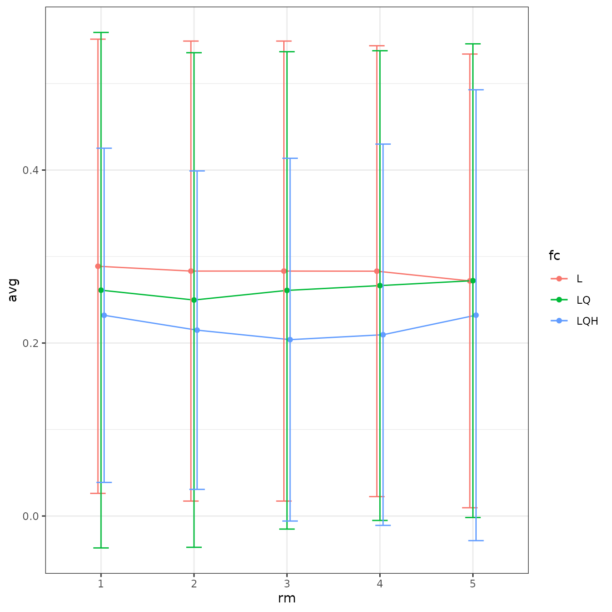
# We can plot more than one statistic at once with ggplot facetting.
evalplot.stats(e = e.mx, stats = c("or.10p", "cbi.val"), color = "fc", x.var = "rm")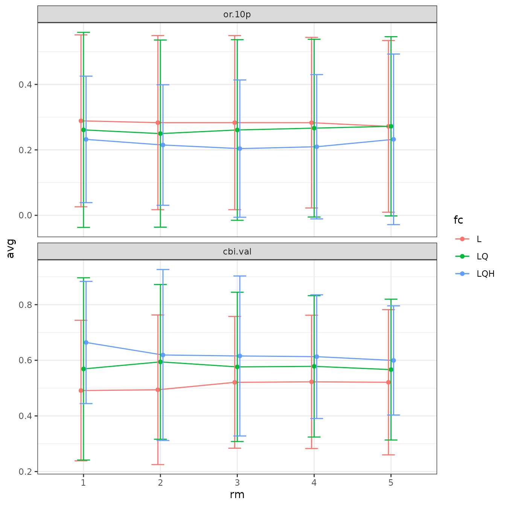
# Sometimes the error bars make it hard to visualize the plot, so we can try turning them off.
evalplot.stats(e = e.mx, stats = c("or.10p", "cbi.val"), color = "fc", x.var = "rm",
error.bars = FALSE)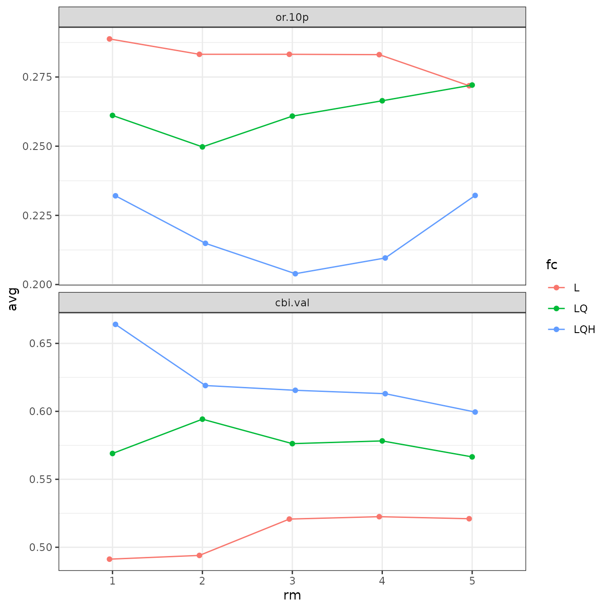
# We can also fiddle with the dodge argument to jitter the positions of overlapping points.
evalplot.stats(e = e.mx, stats = c("or.10p", "cbi.val"), color = "fc", x.var = "rm",
dodge = 0.5)
# Finally, we can switch which variables are on the x-axis and which symbolized by color.
# ENMeval currently only accepts two variables for plotting at a time.
evalplot.stats(e = e.mx, stats = c("or.10p", "cbi.val"), color = "rm", x.var = "fc",
error.bars = FALSE)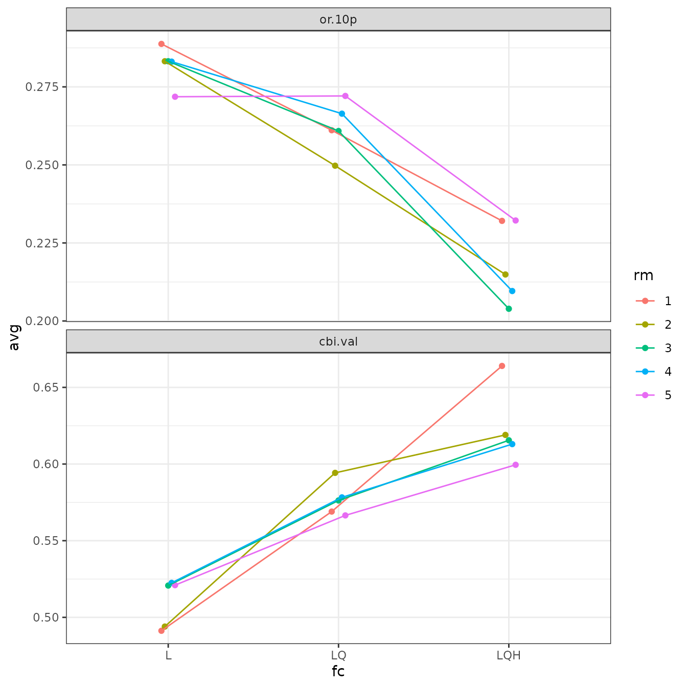
Model selection
Once we have our results, we will want to select one or more models
that we think are optimal across all the models we ran. For this
example, we will demonstrate how to select models without considering
cross-validation results using AICc (Warren & Seifert 2011; but see
Velasco & González-Salazar 2019) and a sequential method that uses
cross-validation results by selecting models with the lowest average 10
percentile omission rate, and to break ties, with the highest average
validation Continuous Boyce Index (Hirzel et al. 2006) calculated with
the function from the R package ecospat (Di Cola et
al. 2017). Concerning AUC, Lobo et al. (2008) and others have pointed
out that validation AUC is inappropriate as an absolute performance
measure of presence-background ENMs, but it is valid to use for relative
comparisons of models constructed with the same data (Radosavljevic
& Anderson 2014). Thus, it can be used as well to choose models,
though it is typically correlated with CBI.
# Overall results
res <- eval.results(e.mx)
# Select the model with delta AICc equal to 0, or the one with the lowest AICc score.
# In practice, models with delta AICc scores less than 2 are usually considered
# statistically equivalent.
opt.aicc <- res |> filter(delta.AICc == 0)
opt.aicc
#> fc rm tune.args auc.train cbi.train auc.diff.avg auc.diff.sd auc.val.avg
#> 1 LQH 2 fc.LQH_rm.2 0.8822739 0.938 0.09416783 0.1200718 0.7887931
#> auc.val.sd cbi.val.avg cbi.val.sd or.10p.avg or.10p.sd or.mtp.avg or.mtp.sd
#> 1 0.1438574 0.619 0.3072599 0.214899 0.1841122 0.05113636 0.07509177
#> AICc delta.AICc w.AIC ncoef
#> 1 3808.58 0 1 27
# This dplyr operation executes the sequential criteria explained above, but
# first removes settings with NA values for omission rate.
opt.seq <- res |>
filter(!is.na(or.10p.avg)) |>
filter(or.10p.avg == min(or.10p.avg)) |>
filter(cbi.val.avg == max(cbi.val.avg))
opt.seq
#> fc rm tune.args auc.train cbi.train auc.diff.avg auc.diff.sd auc.val.avg
#> 1 LQH 3 fc.LQH_rm.3 0.860107 0.919 0.1037965 0.1181042 0.7703849
#> auc.val.sd cbi.val.avg cbi.val.sd or.10p.avg or.10p.sd or.mtp.avg or.mtp.sd
#> 1 0.1422159 0.6155 0.2875604 0.2039141 0.2097099 0.06818182 0.08088696
#> AICc delta.AICc w.AIC ncoef
#> 1 3854.314 45.73378 1.172294e-10 19Let’s now choose the optimal model settings based on the sequential criteria and examine it.
# We can select a single model from the ENMevaluation object using the tune.args of our
# optimal model.
mod.seq <- eval.models(e.mx)[[opt.seq$tune.args]]
# Here are the non-zero coefficients in our model.
mod.seq$betas
#> bio2
#> -4.627958e-01
#> bio13
#> 6.952041e-03
#> bio14
#> -9.994936e-03
#> bio15
#> -1.024131e-02
#> bio19
#> 4.308801e-04
#> I(bio5^2)
#> -4.196653e-04
#> I(bio18^2)
#> -4.125060e-08
#> hinge(bio3):90.0485847628846:94.3169937133789
#> 1.041632e+00
#> hinge(bio3):42.0289840698242:76.1762556737783
#> 4.092149e+00
#> hinge(bio5):32.091081969592:37.1590003967285
#> -1.121875e+00
#> hinge(bio5):6.11800003051758:25.1226941322794
#> 1.906558e+00
#> hinge(bio8):26.0479145001392:29.4118328094482
#> 2.013521e+00
#> hinge(bio13):465.34693877551:877
#> -2.802205e-01
#> hinge(bio13):0:286.367346938775
#> -1.361221e+00
#> hinge(bio13):0:304.265306122449
#> -1.349046e-04
#> hinge(bio14):0:59.7551020408163
#> -1.211475e-01
#> hinge(bio18):0:312.244897959184
#> 4.863442e+00
#> hinge(bio19):1059.69387755102:2077
#> -4.091483e-01
#> hinge(bio19):1144.4693877551:2077
#> -1.021308e+00
# And these are the marginal response curves for the predictor variables wit non-zero
# coefficients in our model. We define the y-axis to be the cloglog transformation, which
# is an approximation of occurrence probability (with assumptions) bounded by 0 and 1
# (Phillips et al. 2017).
plot(mod.seq, type = "cloglog")
# The above function plots with graphical customizations to include multiple plots on
# the same page.
# Clear the graphics device to avoid plotting sequential plots with these settings.
dev.off()
#> null device
#> 1This is how to view the marginal response curves for
maxent.jar models.
# NOTE -- This code is not evaluated and so will display no output in this vignette.
# Please run independently.
# maxent.jar models use the predicts::partialResponse() function for this
pr <- predicts::partialResponse(e.mxjar@models[[opt.seq$tune.args]],
var = "bio5")
plot(pr, type = "l", las = 1)Now we plot and inspect the prediction raster for our optimal model.
Note that by default for maxent.jar (versions >3.3.3k)
or maxnet models, these predictions are in the ‘cloglog’
output format that is bounded between 0 and 1 (Phillips et al. 2017).
This can be changed with the pred.type argument in
ENMevaluate.
These predictions are for the entire extent of the input predictor variable rasters, and thus include areas outside of the background extent used for model training. Thus, we should interpret areas far outside this extent with caution.
# We can select the model predictions for our optimal model the same way we did for the
# model object above.
pred.seq <- eval.predictions(e.mx)[[as.character(opt.seq$tune.args)]]
plot(pred.seq, col = terrain.colors(100))
# We can also plot the binned background points with the occurrence points on top to
# visualize where the training data is located.
points(eval.bg(e.mx), pch = 3, col = eval.bg.grp(e.mx), cex = 0.5)
points(eval.occs(e.mx), pch = 21, bg = eval.occs.grp(e.mx))Let us now explore how model complexity changes the predictions in our example. We will compare the simple model built with only linear feature classes and the highest regularization multiplier value we used (fc=‘L’, rm=5) with the complex model built with linear, quadratic, and hinge feature classes and the lowest regularization multiplier value we used (fc=‘LQH’, rm=1). We will first examine the marginal response curves, and then the mapped model model predictions. Notice how the simpler models tend to have more smooth predictions of suitability, while the complex ones tend to show more patchiness. Deciding on whether a model that is more simple or complex is appropriate for your study is not straightforward, but guides exist in the literature (e.g., Merow et al. 2014).
# First, let's examine the non-zero model coefficients in the betas slot.
# The simpler model has fewer model coefficients.
mod.simple <- eval.models(e.mx)[['fc.L_rm.5']]
mod.complex <- eval.models(e.mx)[['fc.LQH_rm.1']]
mod.simple$betas
#> bio2 bio3 bio8 bio13 bio14 bio15
#> -0.532966677 0.036981721 0.014488869 0.004688425 -0.013258936 -0.023718739
#> bio18
#> 0.001309774
length(mod.simple$betas)
#> [1] 7
mod.complex$betas
#> bio2
#> -1.300772e-01
#> bio13
#> 1.567920e-02
#> bio14
#> -3.408800e-03
#> bio15
#> -1.047407e-02
#> bio18
#> 4.783857e-04
#> bio19
#> 5.045810e-04
#> I(bio3^2)
#> -5.605024e-04
#> I(bio5^2)
#> -8.933996e-05
#> I(bio9^2)
#> -2.114426e-03
#> hinge(bio2):10.3210696200935:18.9859161376953
#> -1.663205e+00
#> hinge(bio2):10.6098978373469:18.9859161376953
#> -2.082817e+00
#> hinge(bio2):4.83333349227905:8.58810031657316
#> -1.580067e+00
#> hinge(bio3):88.9814825252611:94.3169937133789
#> 1.123558e+00
#> hinge(bio3):90.0485847628846:94.3169937133789
#> 2.667189e+00
#> hinge(bio3):92.1827892381318:94.3169937133789
#> -2.634117e-01
#> hinge(bio3):42.0289840698242:67.6394377727898
#> -1.298906e+01
#> hinge(bio3):42.0289840698242:76.1762556737783
#> 1.381063e+01
#> hinge(bio5):32.091081969592:37.1590003967285
#> -3.393143e+00
#> hinge(bio5):6.11800003051758:25.1226941322794
#> 7.683829e+00
#> hinge(bio8):25.4872614485877:29.4118328094482
#> 4.599610e-01
#> hinge(bio8):26.0479145001392:29.4118328094482
#> 4.394250e+00
#> hinge(bio8):27.7298736547937:29.4118328094482
#> -4.326107e+00
#> hinge(bio13):447.448979591837:877
#> -5.871009e+00
#> hinge(bio13):0:196.877551020408
#> 8.887840e-01
#> hinge(bio13):0:214.775510204082
#> 1.749113e+00
#> hinge(bio13):0:304.265306122449
#> -7.253474e+00
#> hinge(bio14):129.469387755102:488
#> -7.833881e-02
#> hinge(bio14):139.428571428571:488
#> -1.871329e+00
#> hinge(bio14):0:29.8775510204082
#> -1.441614e-01
#> hinge(bio14):0:59.7551020408163
#> -1.069372e+00
#> hinge(bio15):69.9453473772321:201.607177734375
#> -6.670763e-01
#> hinge(bio15):0:20.5721609933036
#> 6.341525e+00
#> hinge(bio15):0:41.1443219866071
#> -1.084412e+00
#> hinge(bio18):728.571428571429:1700
#> -1.210289e+00
#> hinge(bio18):1110.20408163265:1700
#> -1.383907e+00
#> hinge(bio18):0:312.244897959184
#> 5.003381e+00
#> hinge(bio19):847.755102040816:2077
#> -7.545615e-01
#> hinge(bio19):1017.30612244898:2077
#> -2.389713e+00
#> hinge(bio19):1059.69387755102:2077
#> -2.880705e-02
#> hinge(bio19):0:42.3877551020408
#> 1.632038e+00
#> hinge(bio19):0:169.551020408163
#> -1.410946e-01
#> hinge(bio19):0:254.326530612245
#> -4.644699e-01
#> hinge(bio19):0:508.65306122449
#> 1.112090e+00
length(mod.complex$betas)
#> [1] 43
# Next, let's take a look at the marginal response curves.
# The complex model has marginal responses with more curves (from quadratic terms) and
# spikes (from hinge terms).
plot(mod.simple, type = "cloglog")
plot(mod.complex, type = "cloglog")
# To get the data for the marginal response curves from a maxnet model, use the
# following code. You can then plot them any way you want.
mod.complex.mrc <-maxnet::response.plot(mod.complex,
v = "bio2",
type = "cloglog",
plot = FALSE)
ggplot(mod.complex.mrc, aes(x = bio2, y = pred)) +
geom_line() + ylab("cloglog prediction") + theme_bw()
# Finally, let's cut the plotting area into two rows to visualize the predictions
# side-by-side.
par(mfrow = c(2,1), mar = c(2,1,2,0))
# The simplest model: linear features only and high regularization.
plot(eval.predictions(e.mx)[['fc.L_rm.5']], ylim = c(-30,20), xlim = c(-90,-30),
main = 'L_5 prediction', col = terrain.colors(100))
# The most complex model: linear, quadratic, and hinge features with low regularization
plot(eval.predictions(e.mx)[['fc.LQH_rm.1']], ylim = c(-30,20), xlim = c(-90,-30),
main = 'LQH_1 prediction', col = terrain.colors(100))Null models
We were able to calculate performance metrics for our model, such as omission rates and AUC, but we do not know how they compare to the same metrics calculated on null models built with random data. This information would allow us to determine the significance and effect sizes of these metrics. If the metrics we calculated for our empirical model were not significantly different from those calculated for a series of null models, we would have not have high confidence that they meaningfully represent how well our empirical model performed. Raes & ter Steege (2007) first introduced the concept of a null ENM and demonstrated how it can be applied. This approach sampled random occurrence records from the study extent and evaluated null models with random cross-validation. Since then some enhancements have been made to this original approach. One such modification was implemented by Bohl et al. (2019), who proposed evaluating models on the same withheld occurrence data as the empirical model. This approach allows for direct comparisons between null performance metrics and those of the emprical models. Kass et al. (2020) further extended this method by configuring it to calculate null performance metrics using spatial partitions.
ENMeval 2.0.x has the functionality to run null ENMs
using the Bohl et al. method with the Kass et al. extension and
visualize the performance of the empirical model against the null model
averages.
# We first run the null simulations with 100 iterations to get a reasonable null distribution
# for comparisons with the empirical values
mod.null <- ENMnulls(e.mx, mod.settings = list(fc = "LQH", rm = 3), no.iter = 100)
# We can inspect the results of each null simulation.
null.results(mod.null) |> head()
#> fc rm tune.args auc.train cbi.train auc.diff.avg auc.diff.sd auc.val.avg
#> 1 LQH 3 fc.LQH_rm.3 0.6507439 0.897 0.1621316 0.1739245 0.5186240
#> 2 LQH 3 fc.LQH_rm.3 0.6679562 0.910 0.2606238 0.1711055 0.5007493
#> 3 LQH 3 fc.LQH_rm.3 0.6774240 0.977 0.2368137 0.2049700 0.5259562
#> 4 LQH 3 fc.LQH_rm.3 0.6808377 0.969 0.2858186 0.1456140 0.4977401
#> 5 LQH 3 fc.LQH_rm.3 0.6901094 0.964 0.1784331 0.2114035 0.5151189
#> 6 LQH 3 fc.LQH_rm.3 0.6663147 0.962 0.2592358 0.1736700 0.4961347
#> auc.val.sd cbi.val.avg cbi.val.sd or.10p.avg or.10p.sd or.mtp.avg
#> 1 0.2094396 0.12500 0.6422466 0.1791667 0.09337961 0.000000000
#> 2 0.2736006 -0.02425 0.7858657 0.2842172 0.28860956 0.033333333
#> 3 0.2680005 0.13300 0.7856327 0.2613636 0.39416843 0.005555556
#> 4 0.2552322 0.05100 0.7734662 0.3342172 0.34400734 0.016666667
#> 5 0.2213815 0.06525 0.6656277 0.2566919 0.27836130 0.050000000
#> 6 0.2450237 -0.01925 0.6993618 0.2390152 0.34145831 0.011111111
#> or.mtp.sd ncoef
#> 1 0.00000000 11
#> 2 0.06666667 18
#> 3 0.01111111 13
#> 4 0.02127616 14
#> 5 0.06382847 12
#> 6 0.02222222 19
# And even inspect the results of each partition of each null simulation.
null.results.partitions(mod.null) |> head()
#> iter tune.args fold auc.val auc.diff cbi.val or.mtp or.10p
#> 1 1 fc.LQH_rm.3 1 0.6768476 0.002594511 0.674 0.0000000 0.15555556
#> 2 1 fc.LQH_rm.3 2 0.4396597 0.171479059 -0.237 0.0000000 0.15909091
#> 3 1 fc.LQH_rm.3 3 0.2585588 0.401438625 -0.596 0.0000000 0.31111111
#> 4 1 fc.LQH_rm.3 4 0.6994300 0.073014078 0.659 0.0000000 0.09090909
#> 5 2 fc.LQH_rm.3 1 0.5833962 0.174584670 0.389 0.1333333 0.28888889
#> 6 2 fc.LQH_rm.3 2 0.3992003 0.141336266 -0.568 0.0000000 0.11363636
# For a summary, we can look at a comparison between the empirical and simulated results.
null.emp.results(mod.null)
#> statistic auc.train cbi.train auc.val auc.diff cbi.val
#> 1 emp.mean 8.609204e-01 0.94100000 7.662181e-01 0.107169028 5.927500e-01
#> 2 emp.sd NA NA 1.448854e-01 0.125131727 3.326694e-01
#> 3 null.mean 6.723666e-01 0.89842000 4.760547e-01 0.217913428 -3.863750e-02
#> 4 null.sd 1.860910e-02 0.08927092 4.554626e-02 0.045507789 1.399808e-01
#> 5 zscore 1.013234e+01 0.47697505 6.370740e+00 -2.433526252 4.510528e+00
#> 6 pvalue 1.985106e-24 0.31668994 9.405895e-11 0.007476276 3.233319e-06
#> or.mtp or.10p
#> 1 0.06250000 0.16969697
#> 2 0.07276278 0.13135003
#> 3 0.03426641 0.27601641
#> 4 0.04489074 0.09926046
#> 5 0.62894011 -1.07111581
#> 6 0.73530587 0.14205868
# Finally, we can make plots of the null model results as a histogram. In this
# example, the empirical validation CBI value (solid red line) is significantly
# higher than random, as it is higher than the 99th quantile of the null values
# (dashed purple line). For reference, this plot also includes the null 95th
# quantile (dashed blue line) and the null mean (solid blue line). For more
# details, please see ?evalplot.nulls.
evalplot.nulls(mod.null, stats = c("or.10p", "cbi.val"), plot.type = "histogram")
# Or we can visualize the results with a violin plot. The red point shows the
# empirical value and the shape shows the density of the null distribution
# with lines denoting the quantiles.
evalplot.nulls(mod.null, stats = c("or.10p", "cbi.val"), plot.type = "violin")Metadata
The last point this vignette will discuss is extremely important for
all scientific research: reproducibility. ENMeval 2.0.x now
catalogs details of the analysis essential for reproducibility in a
rangeModelMetadata object, accessible from the output
ENMevaluation object. The framework and philosophy behind
rangeModelMetadata is described by Merow et al. (2019), and
other related efforts to define crucial metadata standards and rating
systems for ENMs have come out since (e.g., Araújo et al. 2019, Feng et
al. 2019, Zurell et al. 2020). Metadata generated by
ENMeval can be saved to a CSV file for sharing with
collaborators or for use in supplemental information for a manuscript,
etc.
# Generate a rangeModelMetadata object based on the information stored in the
# ENMevaluate object.
rmm <- eval.rmm(e.mx)
# We can fill in the model selection rules based on the sequential criteria we chose.
rmm$model$selectionRules <- "lowest 10 percentile omission rate,
break ties with average validation CBI"
# We can also enter our optimal model settings and the details of our optimal
# model's prediction.
rmm$model$finalModelSettings <- "LQH3"
rmm$prediction$continuous$minVal <- terra::global(pred.seq, min)
rmm$prediction$continuous$maxVal <- terra::global(pred.seq, max)
rmm$prediction$continuous$units <- "suitability (cloglog transformation)"
# This is just an example -- there may be more fields relevant to fill in for your study.
# Finally, we can save the metadata to a CSV file.
rangeModelMetadata::rmmToCSV(rmm, "rmm_mx1.csv")References and Resources
This list of references and resources is not exhaustive by any means, and mainly includes those sources we referenced in the vignette text. The field is expanding further every year, and there are many other papers and packages that one learning about ENMs should explore.
Web Resources
R Packages for ENMs
Baumgartner, J., & Wilson, P. (2021). rmaxent: Tools for working with Maxent in R. R package version 0.8.5.9000, URL: https://github.com/johnbaums/rmaxent.
Wickham H. (2016). ggplot2: Elegant Graphics for Data Analysis. Springer-Verlag New York. https://ggplot2.tidyverse.org.